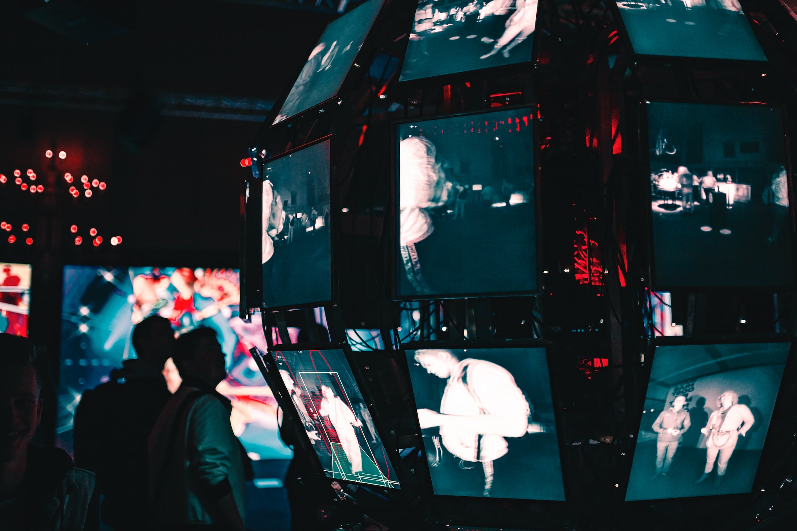

Perkembangan teknologi telah menjadi kekuatan pendorong utama
transformasi dalam berbagai aspek kehidupan kita. Dari inovasi
dalam komunikasi hingga revolusi industri, artikel ini akan
menjelaskan beberapa titik utama perkembangan teknologi yang
membentuk dunia modern.

Revitalisasi Komunikasi
Perkembangan teknologi telah merubah cara kita berkomunikasi
secara mendasar. Dengan munculnya internet, pesan yang dulu
memakan waktu berhari-hari untuk sampai sekarang dapat dikirim
dalam hitungan detik. Teknologi seluler menghadirkan
konektivitas yang tak terbatas, memungkinkan kita terhubung
dengan siapa saja, di mana saja, kapan saja.
Kemunculan media sosial mempercepat pertukaran informasi,
meningkatkan keterlibatan sosial, dan memungkinkan kolaborasi
lintas batas. Komunikasi yang lebih cepat dan terintegrasi telah
menjadi pendorong utama globalisasi dan pertumbuhan hubungan
antarbudaya. Selain itu, teknologi AI dan chatbot semakin
memperkaya pengalaman komunikasi kita, memungkinkan interaksi
yang lebih cerdas dan personal.
Revolusi Industri 4.0
Perkembangan teknologi telah menggiring dunia ke era Revolusi
Industri 4.0. Automasi, robotika, dan kecerdasan buatan menjadi
pendorong utama dalam proses produksi dan manufaktur.
Pabrik-pabrik pintar menggunakan sensor dan konektivitas untuk
mengoptimalkan efisiensi produksi, mengurangi limbah, dan
meningkatkan kualitas produk.
Internet of Things (IoT) memungkinkan perangkat dan sistem
terhubung, menciptakan ekosistem di mana data dapat bergerak
secara mulus, memberikan wawasan real-time, dan mendukung
pengambilan keputusan yang lebih cerdas. Perkembangan teknologi
di bidang ini tidak hanya memengaruhi industri tradisional,
tetapi juga membuka peluang baru dalam pembuatan produk,
logistik, dan layanan.
Transformasi Layanan Kesehatan
Teknologi terus mengubah paradigma layanan kesehatan.
Telemedicine dan aplikasi kesehatan membawa perawatan kesehatan
langsung ke ujung jari, memungkinkan konsultasi jarak jauh,
pemantauan kesehatan, dan manajemen penyakit yang lebih efisien.
Penggunaan big data dan analitika dalam kesehatan memungkinkan
identifikasi pola penyakit, mempercepat penelitian medis, dan
menciptakan terapi yang lebih personal. Robotika dan perangkat
medis pintar mendukung prosedur bedah yang lebih akurat dan
pemulihan pasien yang lebih cepat. Teknologi genetika membawa
revolusi dalam pemahaman tentang penyakit genetik, memungkinkan
pengembangan terapi berbasis gen dan personalisasi perawatan
kesehatan.
Pendidikan Berbasis Teknologi
Dunia pendidikan telah disesuaikan dengan perkembangan
teknologi. E-learning, platform pembelajaran online, dan
aplikasi pendidikan membuka akses pendidikan ke seluruh dunia.
Guru dan siswa dapat terhubung secara virtual, mengakses sumber
daya pendidikan global tanpa batas geografis. Teknologi VR
(Virtual Reality) dan AR (Augmented Reality) mengubah cara
pembelajaran dengan menciptakan pengalaman belajar yang
immersif. Pembelajaran adaptif menggunakan kecerdasan buatan
untuk menyesuaikan materi pembelajaran dengan kebutuhan individu
siswa, menciptakan metode pembelajaran yang lebih efektif.
Sustainability dan Energi Terbarukan
eknologi memainkan peran penting dalam pencarian solusi untuk
tantangan lingkungan. Inovasi di bidang energi terbarukan,
seperti solar dan wind power, mengarah pada transformasi
infrastruktur energi global. Baterai yang lebih efisien dan
teknologi penyimpanan energi mendukung transisi menuju sumber
energi yang lebih berkelanjutan.
IoT digunakan untuk memonitor dan mengoptimalkan konsumsi energi
di berbagai sektor, menciptakan kota pintar yang lebih efisien
dan ramah lingkungan. Sensor dan teknologi pengawasan membantu
pemantauan lingkungan, melacak polusi udara, dan mengelola
sumber daya alam. Kesadaran akan pentingnya keberlanjutan telah
memicu inovasi teknologi yang bertujuan untuk melestarikan
planet kita.